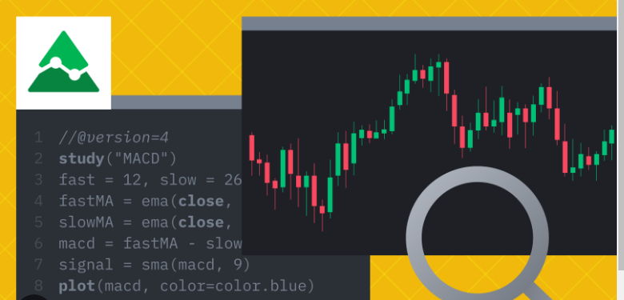

With pine script you can do...
Develop custom indicators: Users can create their own custom indicators to analyze market data and identify specific patterns and trends.

With pine script you can do...
Create Automated Trading Strategies: pine Script allows users to develop automated trading strategies based on specific rules that can be executed directly on the TradingView platform.

With pine script you can do...
Pine Script is accessible to TradingView users who wish to further customize their trading analyzes and integrate custom indicators and strategies directly into the platform. However, it is important to note that Pine Script has limitations as it is specifically designed to be used within the TradingView ecosystem and cannot run on other trading platforms or software.